Primer problema
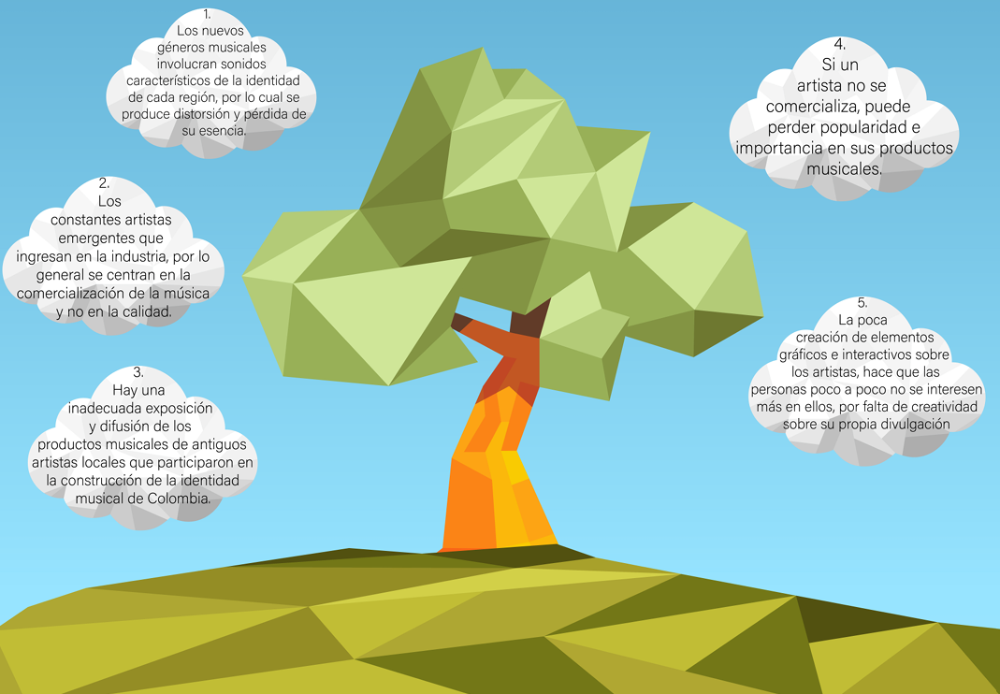
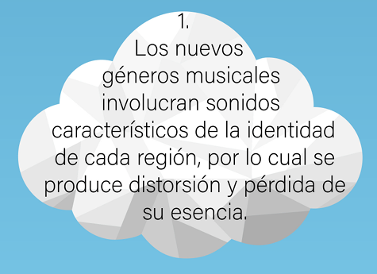
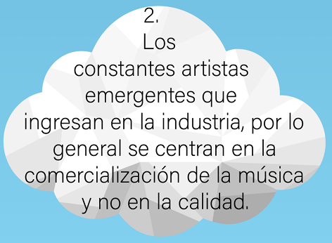
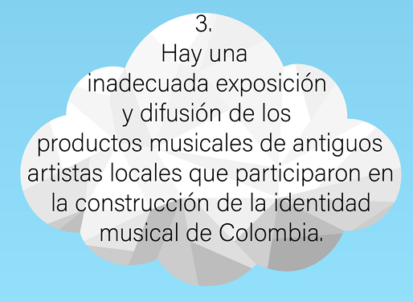
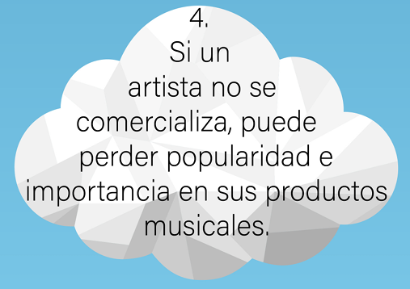
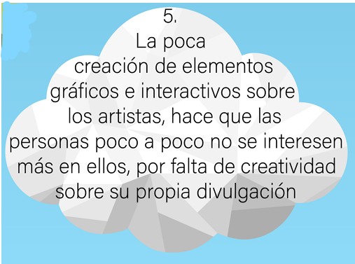
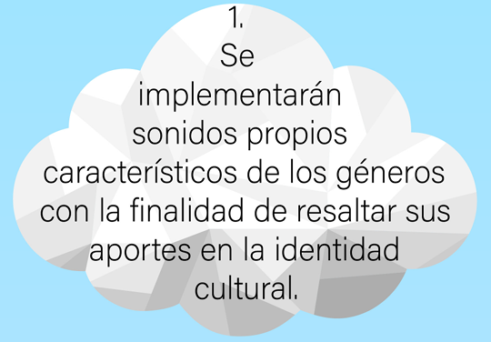
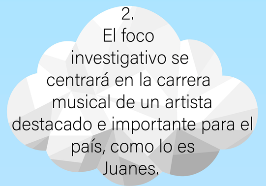
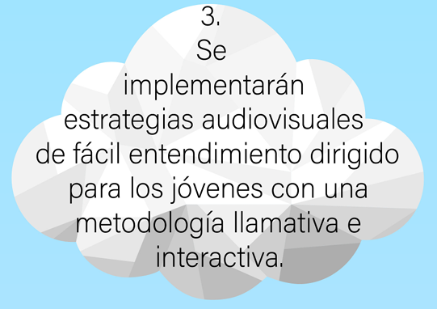
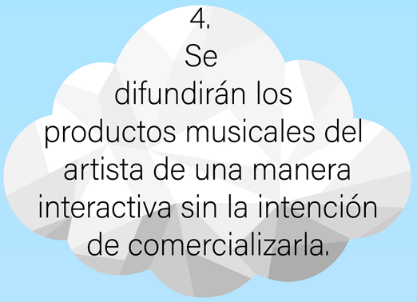
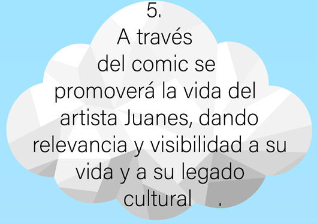
1 - Investigar los datos biográficos de Juan Esteban Aristizábal Vásquez (Juanes) para reconocer aspectos importantes de su vida artística y personal, enfatizando en sus aportes al país.
2 - Compartir el conocimiento adquirido sobre Juanes mediante productos digitales interactivos, para socializar de forma estructurada su vida artística y personal.
3 - Implementar métodos de recolección de datos dinámicos en un grupo de Medellinenses, con el fin de obtener datos importantes y estratégicos sobre el artista.